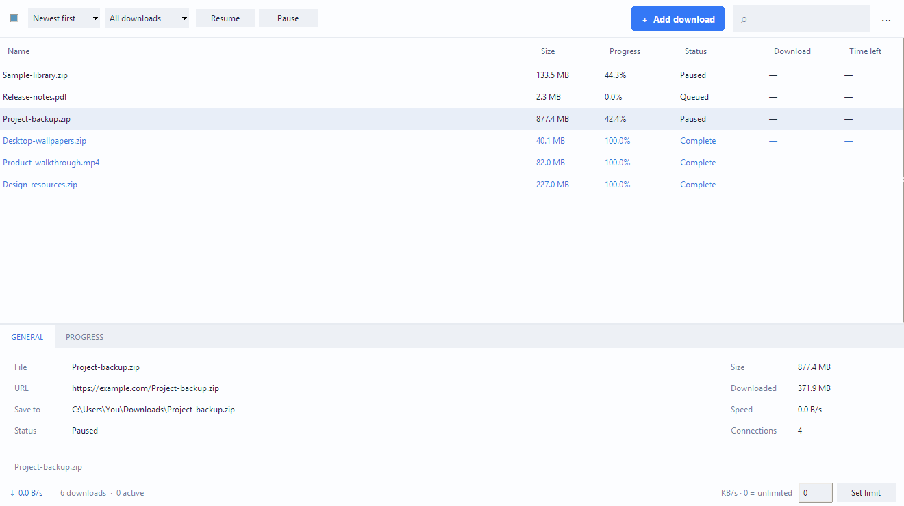

More than one connection
Split a download across 2, 4, or 8 connections when the server supports it. Otherwise, use a single transfer.
FOR WINDOWS · v0.1.0 PREVIEW
A focused download manager that keeps your files moving and your desktop simple.
No account.
No subscription.
Just your downloads.

THE ESSENTIALS, DONE SIMPLY
Split a download across 2, 4, or 8 connections when the server supports it. Otherwise, use a single transfer.
Pause a transfer and resume it later. Saved history keeps interrupted downloads ready for your next session.
Add several links at once. Run two files concurrently, filter the list, and find what you need with search.
Set a total download speed limit in KB/s. Keep some bandwidth available while your files come in.
A FEW CLICKS. YOU’RE IN.
One installer. Everything included.
No separate Python setup needed.
Get OpenDownload-0.1.0-x64.msi for Windows x64.
Choose your install location. Setup adds desktop and Start menu shortcuts.
Open the app, choose Add download, and paste an HTTP or HTTPS file link.
GOOD TO KNOW
This is the first public preview. Installation, startup, shortcuts, uninstall, and seven local transfer tests have been checked on Windows 11 x64. Testing on other computers is still limited. Please report any issues.
The installer and app are unsigned. There is no paid code-signing certificate. Download from this project's GitHub release and compare the SHA-256 checksum if you want to verify the file. A matching checksum verifies the downloaded bytes; it is not a security certification.
Not in this preview. Add direct HTTP or HTTPS file links manually. Browser interception, authenticated browser sessions, video extraction, scheduled starts, and automatic retries are not included.
Resume and segmented transfers depend on the server's range support and file validators. If the remote file changes, OpenDownload starts fresh to avoid combining different versions. Some links restart instead of resuming.
Uninstall from Windows Settings → Apps → Installed apps → OpenDownload. Your downloaded files and history are preserved. History is stored locally under %LOCALAPPDATA%\OpenDownload. Download URLs, including private signed links, are saved in that local history.
Start with the essentials.